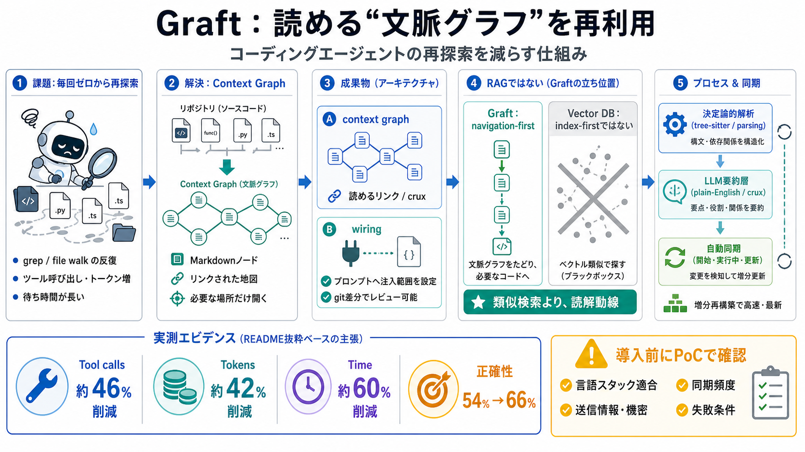

Why we invested in Graftcode - Hard2beat
What used to take days of integration work becomes a one-command operation. The graft auto-updates whenever the target s…

コーディングエージェントが毎回ゼロからリポジトリ理解を作り直さないよう、コードベース専用の文脈グラフを生成して再利用します。
従来のエージェントはタスクごとに検索（grep）やファイル参照を繰り返し、ツール呼び出し・トークン消費・待ち時間が増えやすい課題があります。
Graftは、リポジトリの理解を“リンクされた地図（文脈グラフ）”として作り、必要な場所だけを開けるようにします。
Graftは、リポジトリから「context graph（理解）」と「wiring（配線成果物）」を生成し、エージェントが必要部分だけ読む設計です。
context graph は embeddings / vector DB の“類似度インデックス”ではなく、エージェントのコード読解動線に近い形のファイル群として作られます。
構造部分は tree-sitter 等の決定論的解析で作り、LLMが書く要約ノード（crux 等）と分離して更新コストを抑えます。
照会時にグラフを最新化し、ターン末にコードに触れた分だけ再ビルドすることで、未コミット変更も含む“いまの状態”に追随することを目指します。
Controlled benchmark（Efficiency: 162-run）では、ツール呼び出し約46%、トークン約42%、時間約60%削減が主張されています。
Efficiencyだけでなく正確性も改善（66% vs 54%）とされ、SWE-bench Verified（50 instances）でも54%→66%と主張されています。
言語対応や解像度は段階化されています（full / broad / LSP解決など）。“どこまで構造化できるか”が結果に影響し得ます。
READMEベースの数値は説得力がありますが、モデル選択・タスク特性・失敗パターンで再現性が変わるため、社内PoCが重要です。
以下はユーザー入力に含まれる範囲で言及された情報です（Graft（NanoNets）README抜粋）。
What used to take days of integration work becomes a one-command operation. The graft auto-updates whenever the target s…
MeetGraftcode The integration-free development layer Graftcode is a cross-runtime communication layer that lets you ca…
The platform supports over 20 programming languages, covers 143 language pair combinations, and works across AWS, Azure,…
That is the whole setup. `graft init` asks which of your coding agents to wire up, builds `graft/` from your code, and d…
Graft deliberately does not orchestrate agents, assign tasks, manage lifecycles, persist agent work, provide a monitorin…